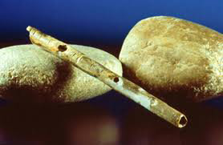

Elizabeth Saller
The flute is known to have been a thriving instrument from the Stone Age to the present. Through the years there have been many modifications to the mechanics of the instrument and how it is used.
The earliest surviving flute dates back to 36,000 B.C.E. This Stone Age flute was found in Europe and -as is typical for flute found from this era- was made from a hollowed out animal bone. Holes were bored into the bone so that fingers covering the holes could change the pitch being played. The majority of early historical evidence of flutes comes from early depictions on walls and pottery.
 The Neolithic era paintings portray people playing flutes, but the lack of written records leaves to speculation the circumstances surrounding the flutes being played. Solid documentation of the uses of flutes doesn't show up until slightly before the Medieval Period. The most commonly pictured flute from this Period is a transverse flute made of wood or ivory with generally six holes drawn into the bore of the material. These instruments were regularly used for infantry marches -accompanied by a drum. They also showed up for entertaining at dances and festivals along with more serious roles at various ceremonies such as weddings and funerals.
During the Renaissance period the flute began slowly developing mechanically. Flutes were being constructed in different sizes to match the key the flute would be played in. And the larger flutes (known as bass flutes) started to be divided into two pieces to make tuning easier. Marin Mersenne mentioned adding keys to a flute during the Renaissance to produce a more chromatic scale, but no action was taken to add keys to the flute at this time. However the Baroque Era was a different story.